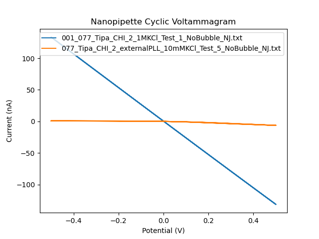
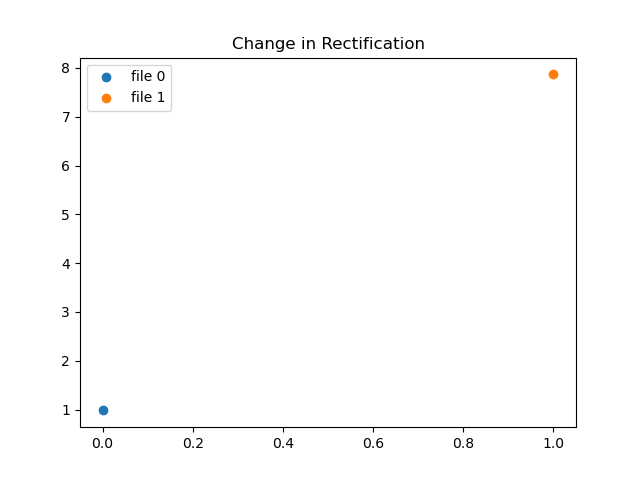

By Nathaniel Jones

Figure 1. This image highlights the relationship between two nanopipette voltammagrams based on Ohm's Law.
Based on the equation r = 1/𝜋kR*tan(B), the resistance resulting from voltage and current outputs can be extracted and utilized to measure pipette tip diameter. The results from this run are shown in the console command window as the first value for each input file.
From the following equation rectification ratio = |𝐼^+/𝐼^− |, the currents at the maximum positive and maximum negative voltages can output a ratio to tell me how much the pipette is rectifying based on its tip size, the concentration of solution, or the modifications made to the surface. The ratio output from this is shown in the console command window as the second input for each file.

Figure 2. This graph illustrates the difference in rectification between two pipette tips, where file 0 is the first file (in blue) on the voltammagram above and file 1 is the second file (in orange) on the volrammagram above.
The files above are coded to overwrite any time the script is run, so they will automatically import the newest image when this page is opened or refreshed.